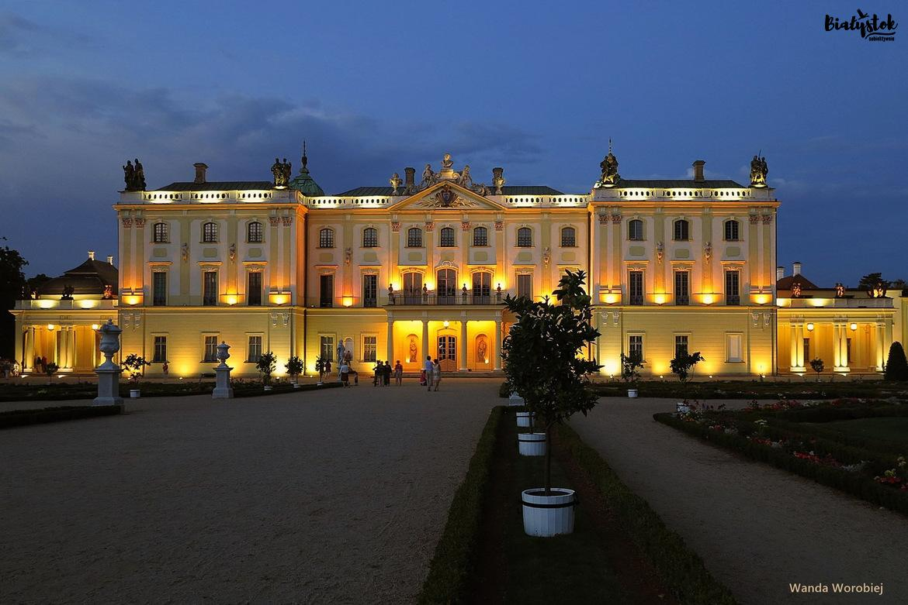
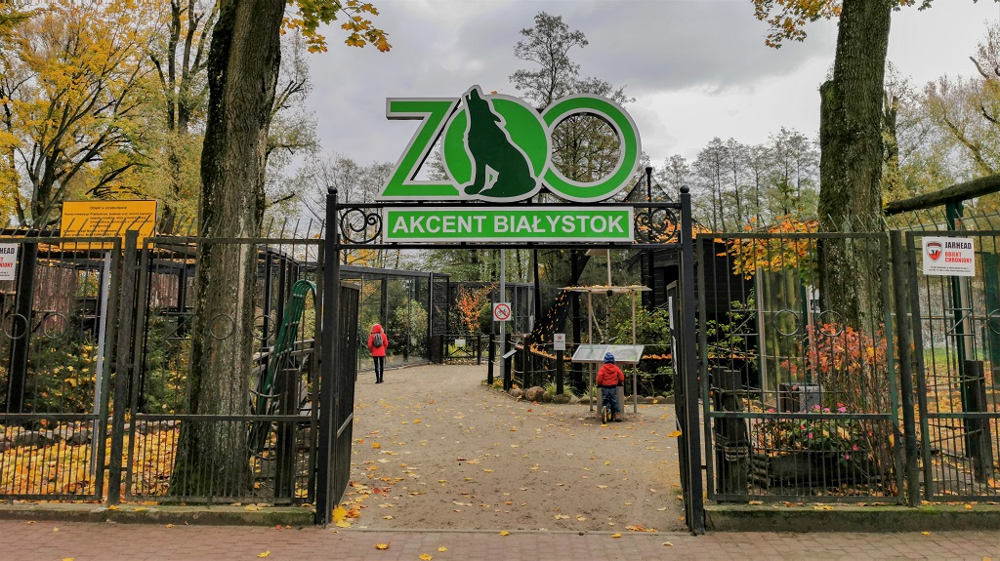
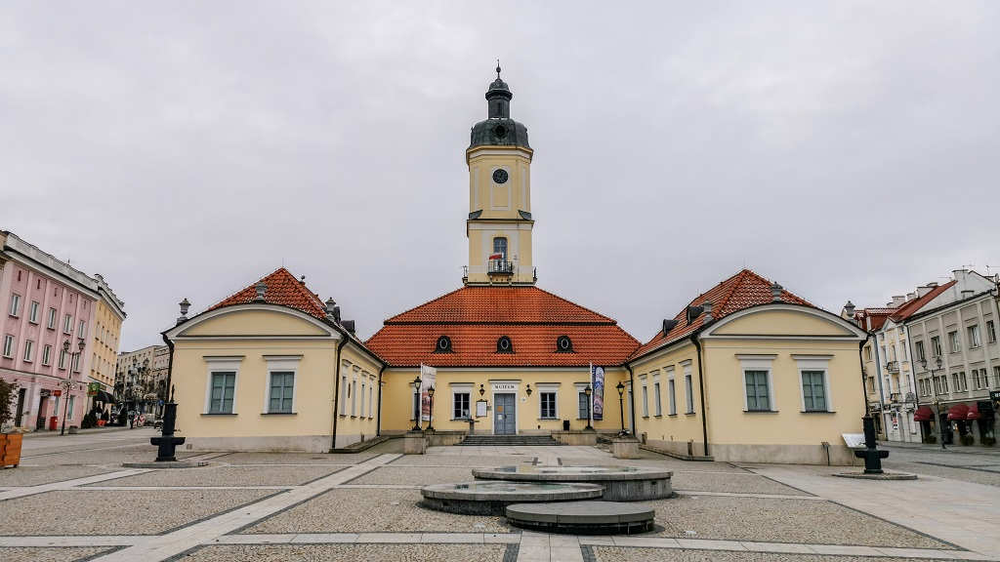

Pałac Branickich
Pałac Branickich w Białymstoku, nazywany "Wersalem Podlasia", to barokowy zespół pałacowo-ogrodowy z XVIII wieku, który pełnił funkcję rezydencji magnackiej rodu Branickich.

Akcent ZOO
Akcent Zoo w Białymstoku to niewielki ogród zoologiczny znajdujący się w Parku Konstytucji 3 Maja, który jest domem dla rodzimych gatunków zwierząt, takich jak żubry, jelenie czy daniele.

Ratusz na rynku Kościuszki
Ratusz na Rynku Kościuszki w Białymstoku to barokowa budowla z XVIII wieku, która pierwotnie pełniła funkcję handlową. Obecnie mieści się w nim Muzeum Podlaskie, prezentujące zbiory związane z historią i kulturą regionu.